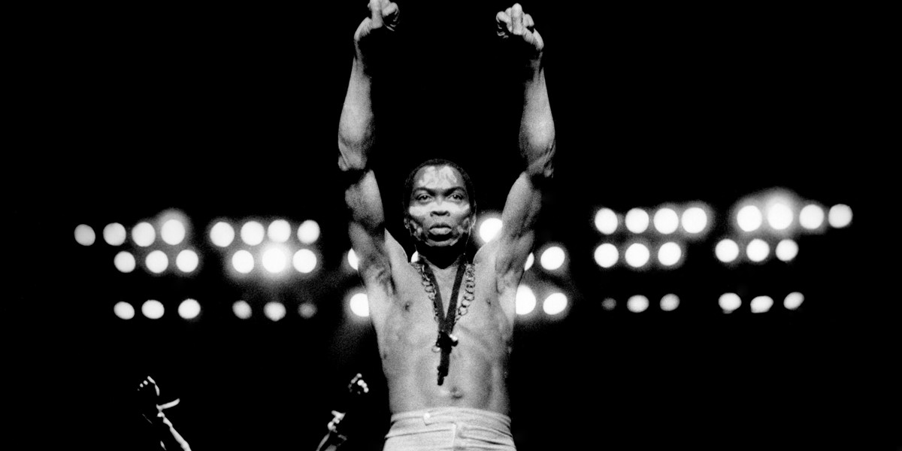

Fela Aníkúlápó Kútì
Abàmì Ẹ̀dá

Nigerian musician and activist.
Here is a timeline of the life of Fela Aníkúlápó Kútì:
Early Life
- October 15, 1938: Fela Anikulapo Kuti was born in Abeokuta, Nigeria, to Olufunmilayo Ransome-Kuti, a feminist activist, and Reverend Israel Oludotun Ransome-Kuti, a minister.
- 1958: Fela began studying medicine at the University of Lagos, but soon abandoned it to pursue a career in music.
Music Career
- 1960: Fela formed his first band, Koola Lobitos, which played a fusion of jazz, highlife, and traditional Yoruba music.
- 1963: Fela moved to London to study music at the Trinity College of Music.
- 1969: Fela formed the Afrobeat band, Africa '70, which became a platform for his political and social commentary.
- 1970s: Fela released a string of critically acclaimed albums, including "Zombie," "Gentleman," and "Confusion."
- 1977: Fela's music became more overtly political, leading to clashes with the Nigerian government.
Political Activism
- 1974: Fela founded the Kalakuta Republic, a communal compound in Lagos that served as a hub for his music, politics, and social activism.
- 1978: Fela formed the Movement of the People (MOP) party, which aimed to promote democracy and social justice in Nigeria.
- 1983: Fela was arrested and jailed for 20 months on charges of currency smuggling.
Later Life and Legacy
- 1990s: Fela's health began to decline due to complications from AIDS.
- August 2, 1997: Fela Kuti passed away at the age of 58.
- 2008: Fela's music was revived through the Broadway musical "Fela!," which won three Tony Awards.
- Today: Fela Kuti's music and legacy continue to inspire generations of musicians, activists, and social justice advocates around the world.
Learn more about Fela Aníkúlápó KútìI want peace. Happiness. Not only for myself. For everybody.
- Fela Kútì